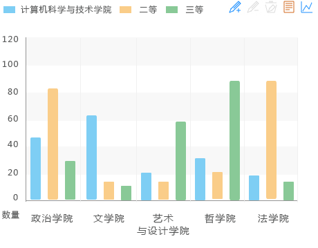
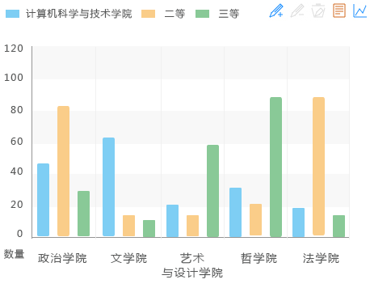
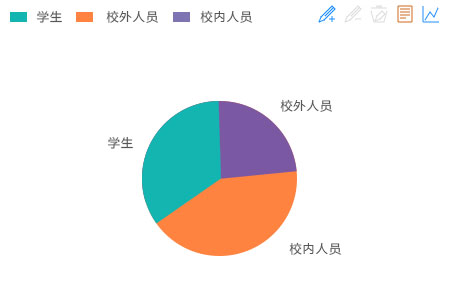

省级、国家级、市厅级获奖成果

获奖人单位分布

获奖种类及等级分布

完成人承担角色

科技获奖（音体美获奖)成果列表
| 获奖人单位 | 获奖人 | 成果名称 | 获奖名称 | 获奖等级 | 授奖单位 | 授奖时间 | |
| 1 | 物理与电子工程学院 | 张继才dfg | 多功能单摆实验仪 | 河南省科技进步奖 | 受理 | 河南省人民政府 | 2014-08-21 |
| 2 | 物理与电子工程学院 | 张继才ddfg | 多功能单摆实验仪 | 河南省科技进步奖 | 受理 | 河南省人民政府 | 2014-08-21 |
| 3 | 物理与电子工程学院 | 张继才dskjfh | 多功能单摆实验仪 | 河南省科技进步奖 | 受理 | 河南省人民政府 | 2014-08-21 |
| 4 | 物理与电子工程学院 | 张继才、张继才 | 多功能单摆实验仪 | 河南省科技进步奖 | 受理 | 河南省人民政府 | 2014-08-21 |
| 5 | 物理与电子工程学院 | 张继才 | 多功能单摆实验仪 | 河南省科技进步奖 | 受理 | 河南省人民政府 | 2014-08-21 |
| 6 | 物理与电子工程学院 | 张继才dskjfh | 多功能单摆实验仪 | 河南省科技进步奖 | 受理 | 河南省人民政府 | 2014-08-21 |
| 7 | 物理与电子工程学院 | 张继才、张继才 | 多功能单摆实验仪 | 河南省科技进步奖 | 受理 | 河南省人民政府 | 2014-08-21 |
| 8 | 物理与电子工程学院 | 张继才 | 多功能单摆实验仪 | 河南省科技进步奖 | 受理 | 河南省人民政府 | 2014-08-21 |